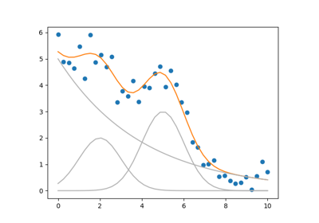
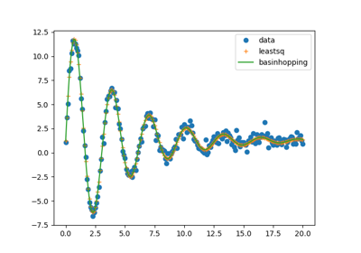
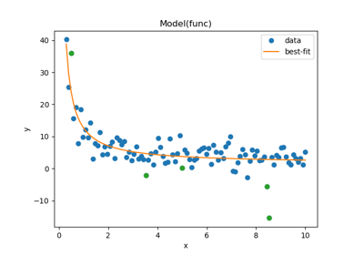
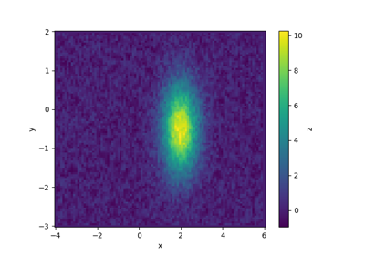

Examples gallery¶
Below are examples of the different things you can do with lmfit. Click on any image to see the complete source code and output.
We encourage users (i.e., YOU) to submit user-guide-style, documented, and preferably self-contained examples of how you use lmfit for inclusion in this gallery! Please note that many of the examples below currently do not follow these guidelines yet.



Building a lmfit model with SymPy
Building a lmfit model with SymPy

Fit comparing leastsq and basin hopping, or other methods
Fit comparing leastsq and basin hopping, or other methods



Outlier detection via leave-one-out
Outlier detection via leave-one-out



Fit Two Dimensional Peaks

Global minimization using the brute method (a.k.a. grid search)
Global minimization using the brute method (a.k.a. grid search)
Examples from the documentation¶
Below are all the examples that are part of the lmfit documentation.